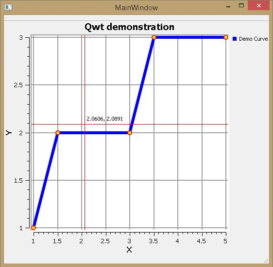
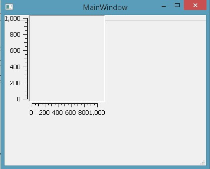
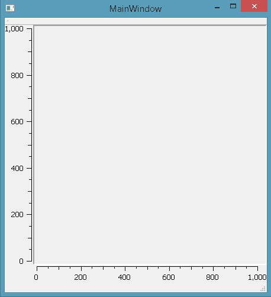
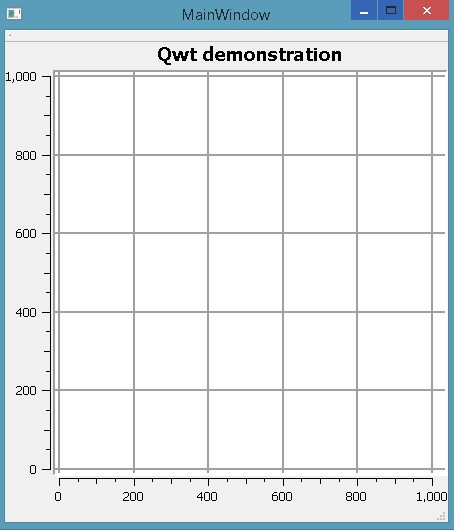
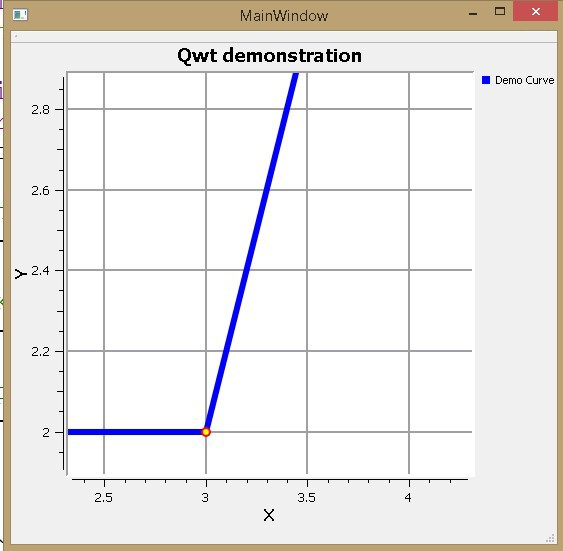

Qwt и Qt Creator. Быстро и просто. Часть 1: визуализатор данных
Для понимания этой статьи читатель должен иметь начальный опыт разработки windows-приложений в среде Qt Creator.
В примерах используются Qt Creator 3.0.0 (MinGW) и Qwt-6.1.0.

Qwt – графическая библиотека, позволяющая значительно упростить процесс визуализации данных в программе. Упрощение заключается в следующем: нет необходимости вручную прописывать элементы отображения, такие как шкалы координат, сетки, кривые данных и проч. Следует лишь задавать параметры этих элементов.
Аналогия: для того, чтобы построить график в Excel Вы выбираете данные и настраиваете параметры их отображения: минимум и максимум шкал, цвет кривых, подписи данных и др. За визуализацию отвечает Excel – сами элементы Вы не программируете.
Особо отмечу, что Qwt позволяет работать с достаточно большими объемами данных (я работал с 200 000 точек) без возникновения раздражающих «тормозов».
В данной статье мы будем отображать кривую на графике, масштабировать ее, перемещаться по графику, смотреть координаты курсора. Таким образом, мы реализуем минимальный функционал, необходимый для вывода и просмотра графиков. В последующих статьях наш графический редактор будет оснащен дополнительными возможностями.
Подобные инструкции в интернете, конечно, есть. Но их очень немного. В большом количестве присутствует информация по решению различных проблем с Qwt, которая полезна лишь тем программистам, которые уже имеют прочные базовые навыки работы с библиотекой. В данной статье я собрал разрозненные кусочки примеров кода, позволяющего создать простейший визуализатор графиков. Приступим же.
Этап 1: подключение Qwt к Qt Creator
(проверено для ОС Win 7 x64 и Win 8.1 x64).
Этап 2: использование библиотеки Qwt.
Шаг 1: подготовка среды.
Действия 2 и 3 следует выполнять для каждого проекта, в котором предполагается использовать библиотеку Qwt.
Шаг 2: реализация возможностей Qwt.
Файл main.cpp оставляем неизменным. В данном примере код будет написан в файле mainwindow.cpp. Это не совсем элегантно, но приемлемо в качестве примера.
1. Добавляем в начало файла mainwindow.cpp следующие строки:
#include <qwt_plot.h>
#include <qwt_plot_grid.h>
#include <qwt_legend.h>
#include <qwt_plot_curve.h>
#include <qwt_symbol.h>
#include <qwt_plot_magnifier.h>
#include <qwt_plot_panner.h>
#include <qwt_plot_picker.h>
#include <qwt_picker_machine.h>
Если эти headers у вас подчеркиваются с надписью «Файл не найден», значит, вы не выполнили п.3 шага 1.
2. Теперь код будем писать только в конструкторе MainWindow. Можно было бы разбить код на методы, но в рамках обучающего примера я не стал этого делать.
Создаем основное поле графика:
MainWindow::MainWindow(QWidget *parent) :
QMainWindow(parent),
ui(new Ui::MainWindow)
{
ui->setupUi(this);
// Создать поле со шкалами для отображения графика
// (this) - разместить поле на текущем окне
// #include <qwt_plot.h>
QwtPlot *d_plot = new QwtPlot( this );
}
Компилируем, запускаем и видим не очень-то привелекательную картинку:

Добавим строчку:
setCentralWidget(d_plot); // привязать поле к границам окна
Запускаем. Пробуем развернуть окно на весь экран, поле графика тоже развернется на весь экран с соответствующим масштабированием. Неплохо!

3. Приукрасим поле, добавив следующие строчки кода:
d_plot->setTitle( "Qwt demonstration" ); // заголовок
d_plot->setCanvasBackground( Qt::white ); // цвет фона
// Параметры осей координат
d_plot->setAxisTitle(QwtPlot::yLeft, "Y");
d_plot->setAxisTitle(QwtPlot::xBottom, "X");
d_plot->insertLegend( new QwtLegend() );
// Включить сетку
// #include <qwt_plot_grid.h>
QwtPlotGrid *grid = new QwtPlotGrid(); //
grid->setMajorPen(QPen( Qt::gray, 2 )); // цвет линий и толщина
grid->attach( d_plot ); // добавить сетку к полю графика
Результат запуска (поле уже смотрится достаточно симпатично):

4. Добавим график
// Кривая
//#include <qwt_plot_curve.h>
QwtPlotCurve *curve = new QwtPlotCurve();
curve->setTitle( "Demo Curve" );
curve->setPen( Qt::blue, 6 ); // цвет и толщина кривой
curve->setRenderHint
( QwtPlotItem::RenderAntialiased, true ); // сглаживание
// Маркеры кривой
// #include <qwt_symbol.h>
QwtSymbol *symbol = new QwtSymbol( QwtSymbol::Ellipse,
QBrush( Qt::yellow ), QPen( Qt::red, 2 ), QSize( 8, 8 ) );
curve->setSymbol( symbol );
// Добавить точки на ранее созданную кривую
QPolygonF points;
points << QPointF( 1.0, 1.0 ) // координаты x, y
<< QPointF( 1.5, 2.0 ) << QPointF( 3.0, 2.0 )
<< QPointF( 3.5, 3.0 ) << QPointF( 5.0, 3.0 );
curve->setSamples( points ); // ассоциировать набор точек с кривой
curve->attach( d_plot ); // отобразить кривую на графике
Результат:
Отмечу, что минимум и максимум осей определяется автоматически. Это приятный сюрприз! Конечно, можно задавать эти значения вручную, например, вот такой строчкой:
d_plot->setAxisScale(QwtPlot::xBottom, 0, 10);
5. Все это хорошо, но мы-то привыкли, что есть возможность приближения/удаления графика а также перемещения по его полю. Не проблема! Всего несколько строк, и этот функционал появляется в нашем редакторе:
// Включить возможность приближения/удаления графика
// #include <qwt_plot_magnifier.h>
QwtPlotMagnifier *magnifier = new QwtPlotMagnifier(d_plot->canvas());
// клавиша, активирующая приближение/удаление
magnifier->setMouseButton(Qt::MidButton);
// Включить возможность перемещения по графику
// #include <qwt_plot_panner.h>
QwtPlotPanner *d_panner = new QwtPlotPanner( d_plot->canvas() );
// клавиша, активирующая перемещение
d_panner->setMouseButton( Qt::RightButton );
Масштабируем и перемещаем:

6. Напоследок активируем возможность определения координат курсора:
// Включить отображение координат курсора и двух перпендикулярных
// линий в месте его отображения
// #include <qwt_plot_picker.h>
// настройка функций
QwtPlotPicker *d_picker =
new QwtPlotPicker(
QwtPlot::xBottom, QwtPlot::yLeft, // ассоциация с осями
QwtPlotPicker::CrossRubberBand, // стиль перпендикулярных линий
QwtPicker::ActiveOnly, // включение/выключение
d_plot->canvas() ); // ассоциация с полем
// Цвет перпендикулярных линий
d_picker->setRubberBandPen( QColor( Qt::red ) );
// цвет координат положения указателя
d_picker->setTrackerPen( QColor( Qt::black ) );
// непосредственное включение вышеописанных функций
d_picker->setStateMachine( new QwtPickerDragPointMachine() );
Выводы:
Совсем немного кодирования, в основном заключающегося в настройках внешнего вида просмотрщика, и у нас реализован базовый функционал.
Что дальше? Если будет проявлен интерес к данной теме, то в следующих статьях я могу рассказать о том, как:
1. Отображать координаты курсора в строке состояния, а также сохранять эти координаты в отдельных переменных.
2. По клику мышкой ставить точки в области расположения курсора.
3. Добавлять управляющие кнопки и кое-что еще.
P.S: в папке «C:\qwt-6.1-rc3\examples» располагается исходный код и .exe файлы множества интересных примеров применения Qwt. Код без комментариев.
Ссылки (английский язык):
Официальный ресурс:
qwt.sourceforge.net/
Сборник решений разнообразных пробем c Qwt:
www.qtcentre.org/archive/index.php/f-23.html
Вариант библиотеки, альтернативный Qwt (спасибо, GooRoo!)
www.qcustomplot.com/